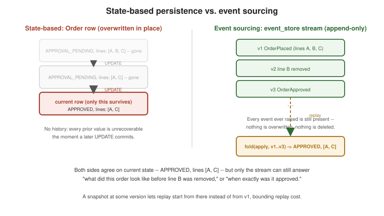

Event Sourcing
|
This content was generated with the assistance of AI and should be verified against the official documentation before being relied on in production. |
Every other page in this section persists Order state-based: OrderRepository.save(order) writes the
aggregate’s current row, overwriting whatever was there before, and Order.reconstitute(…) rebuilds it from
that one row on the next load. Event sourcing replaces that row with something structurally different: the
aggregate’s persisted form is the ordered sequence of every domain event it ever raised, and its current state is
never stored directly at all — only ever derived, by replaying that sequence. This page covers why state-based
persistence runs into real limits, what an event store looks like, and the canonical EventSourcedOrder variant
that reuses this section’s own Order* event types end to end, shown with the same Java 21 / Spring Boot 4.1.x /
Spring Data JPA baseline as the rest of this section.
The trouble with state-based persistence
Richardson’s Microservices Patterns 6.1.1 names three limitations of the state-based approach this section’s
OrderRepository/Order.reconstitute(…) pair otherwise uses well:
-
No history. Once
removeLine’s `UPDATE(or JPA’s equivalent managed-entity flush) overwrites `Order’s row, the row’s previous value is gone — there is no way to answer "what did this order’s line items look like yesterday, before it was modified twice," short of a separate audit mechanism bolted on after the fact. -
Bolted-on audit logging. That separate mechanism is exactly what most state-based systems eventually grow: a hand-maintained audit table, a database trigger, or an application-level "log every change" aspect, each one more code paying for a fact the domain model itself does not naturally produce, and each one a second place a change to `Order’s behavior has to remember to keep in sync with the first.
-
Bolted-on event publication. Domain Events and Transactional Outbox already show what it costs to reliably publish
OrderPlacedalongside a state-based save: an outbox table, a relay process, an idempotent consumer on the other end — real, necessary infrastructure, but infrastructure whose entire job is to recover a fact (a sequence of things that happened) an aggregate could have preserved directly, if only its persisted form were the sequence of events itself rather than a single overwritten row.
Event sourcing does not add a new mechanism to fix these three gaps one at a time — it removes the row that caused them. If the only thing ever written is an immutable, append-only sequence of past-tense facts, history is not bolted on afterward, it is the storage model; a durable, replayable, complete record of every change is not a separate audit log, it is the same data the aggregate already needed to reconstruct its own state; and reliable event publication no longer needs a distinct outbox table, because the event store already is an append-only log of exactly the events a subscriber would want to consume.
Persisting an aggregate as its event stream
The canonical EventStore interface this section’s other pages already reference by name is deliberately small — two operations, keyed by a stream id (one stream per aggregate instance, orderId.value().toString() for
Order):
package com.example.eventsourcing;
import com.example.shared.event.DomainEvent;
import java.util.List;
public interface EventStore {
void append(String streamId, long expectedVersion, List<DomainEvent> events);
List<DomainEvent> load(String streamId);
}append takes an expectedVersion — the version the caller believes the stream is currently at — precisely
so two concurrent commands against the same aggregate cannot both succeed silently: this is the event store’s own
form of the @Version optimistic-locking check Aggregates already
uses for the state-based Order, applied to a stream of events instead of a single row (the code section below
shows exactly how a SQL-backed implementation enforces it, and what happens when it fails). load returns every
event ever appended to the stream, oldest first — the complete history EventSourcedOrder.reconstitute below
folds over to rebuild current state.
Reconstituting state from that history is a single, uniform operation regardless of how many events a stream
holds: fold(apply, events) — start from an empty/initial aggregate and apply each event, in order, exactly the
way List.reduce or Stream.reduce folds a sequence into one accumulated value. Structuring the aggregate around
this fold splits every state-changing operation into two distinct methods with two distinct jobs:
-
decidemethods are what command methods become: given the aggregate’s current state and a command, they validate the request against the domain’s invariants and return the events that should happen if the command is valid — exactlyOrder.approve()’s `requireStatuscheck, reframed as "decide whetherOrderApprovedis a valid next fact," rather than mutating anything directly. -
applymethods are the only place state actually changes, and they are not allowed to fail or validate anything — by the timeapplyruns, the event it is applying has already been decided as valid (or, on replay, it is history that has already happened and cannot be re-argued with).applyis pure mechanical translation: "given this event, what does the in-memory state become."
The clean way to write apply against the Order* event hierarchy is a sealed interface for DomainEvent’s
`Order-specific subtypes, matched exhaustively with a switch pattern-matching expression — the compiler then
guarantees every event type has a handled case, which is exactly the safety net "never silently drop an event"
needs. The code section below shows this switch in full against the section’s own OrderPlaced/OrderApproved/
OrderRejected/OrderCancelled events.
Snapshots, idempotency, and evolving events
Three concerns matter once an event-sourced aggregate is more than a toy, each one addressed independently of the
decide/apply split above:
-
Snapshots. Replaying an aggregate’s entire history on every load is fine for an order with a dozen events and a real cost once a long-lived aggregate accumulates thousands — a snapshot is a periodic capture of the fully-folded state at some known version, so a load only has to replay events after the snapshot rather than from the very beginning. Nothing about the event store’s own append-only guarantee changes to support this: the snapshot is an optimization for
load, stored separately, thatEventSourcedOrder.reconstitutecan use or skip and always produce the same result either way, because folding from a snapshot plus its later events is definitionally the same as folding from the start. -
Idempotent command handling and duplicate detection. A command handler that calls
decideand thenappend`s the resulting events can itself be retried or redelivered — the same at-least-once reality Domain Events already states for consumption applies equally to command handling here. The `expectedVersioncheck onappendis part of the answer (a redelivered command that already succeeded will find the stream has moved pastexpectedVersionand can treat that as "already applied" rather than retrying blindly), but a handler that wants to distinguish "already applied, safe no-op" from "genuinely conflicts with a different concurrent command" typically also records the causing command’s id alongside the version it produced, the same processed-message discipline this section’s other pages already use for event consumption, applied here to command handling instead. -
Evolving events. An event, once appended, is never deleted and never has its meaning silently repurposed — exactly the versioning discipline Domain Events already states for events in general, sharper here because the event store is not a transient message but the aggregate’s only record of its own history: losing or reinterpreting an old event does not just confuse one consumer, it corrupts replay for every future reader forever. Upcasting — a translation step that reads an old event version off the store and converts it, at load time, into the shape current code expects — lets the event schema evolve (a field renamed, a new field added with a sensible default for old events, a event split into two more specific ones) without rewriting history:
OrderPlacedV2would sit alongsideOrderPlacedin the stream, and an upcaster converts every storedOrderPlacedinto anOrderPlacedV2shape as it is read, soapplyonly ever has to handle the current version. Vernon’s DDD Destilado ch. 6 and Richardson’s Microservices Patterns 6.1.2 both land on the same rule from different directions: never delete a meaning, only ever add a new one alongside it.
Benefits, drawbacks, and event sourcing with sagas
Event sourcing earns back real capability for the cost of a genuinely different persistence model:
-
Audit trail for free. The event store already is the complete history — there is no separate audit mechanism to build or keep in sync, because the audit trail and the aggregate’s actual persisted form are the same data.
-
Temporal queries. "What did this order look like at version 3, or as of last Tuesday" is a replay stopped partway through the stream, not a feature that has to be specially built — the same fold that produces current state produces any past state, by folding fewer events.
-
Reliable event publication for free. Every event that changed the aggregate’s state was, by construction, already durably appended before
decide/applyreturned — there is no separate outbox write needed to make publication reliable, because the event store’s own append is the durable write a consumer can be relayed from (Messaging Patterns in Practice covers how a Kafka-backed event store realizes this relay at the broker level). -
Testability via given/when/then. Because
decideis a pure function of "current state, derived by folding given events" and "a command," testing it needs no database, no mocks, and no event store at all — only a list of events to fold, a command to decide against, and an assertion on the events that decision produces (the code section below shows exactly this shape).
The drawbacks are the direct cost of the same design: a genuine learning curve for a team used to
state-based persistence, since decide/apply, replay, and upcasting are unfamiliar machinery even to
experienced developers the first few times; querying requires CQRS — an event store answers "what happened to
this one aggregate," replayed by stream id, and has no efficient answer to "which orders are APPROVAL_PENDING
right now" without a read model built from the same events, which is exactly
CQRS's subject, not this page’s; event schema evolution is real,
ongoing maintenance work, not a one-time migration, since every past event’s shape has to keep being upcastable
forever; and storage growth is unbounded by construction — an append-only log never shrinks on its own, which
is exactly what makes snapshots (above) a practical necessity rather than an optional optimization once an
aggregate’s event count grows large.
Event sourcing and sagas compose naturally, in one direction worth stating explicitly:
Sagas already models PlaceOrderSaga’s own `SagaState as a JPA entity
persisted state-based, but nothing about the saga pattern requires that — an event-sourced saga participant or
orchestrator persists its own state transitions (RESERVING_INVENTORY → AUTHORIZING_PAYMENT → …) as an
event stream exactly like EventSourcedOrder does, gaining the same audit trail and temporal-query benefits for
the saga’s own progress that event sourcing gives any other aggregate; the trade-off is identical too, since the
saga orchestrator now also needs a read model if anything needs to query "which sagas are currently stuck in
`AUTHORIZING_PAYMENT`" across instances rather than one stream at a time.
Frameworks and stores, none required
The code section below uses a plain SQL append-only table on purpose, to show the pattern with no framework
between the code and the mechanism it depends on — but production teams rarely hand-roll the whole thing, and
naming the alternatives is worth doing without endorsing any one as required: Axon Framework
(axoniq.io) provides event sourcing and CQRS as first-class framework concepts, including
the aggregate/@EventSourcingHandler shape EventSourcedOrder below sketches by hand; Eventuate
(eventuate.io), from Richardson himself, ships an event store and saga orchestration
purpose-built for exactly the patterns this section covers; EventStoreDB (also distributed as KurrentDB,
kurrent.io) is a database purpose-built around the append/load stream model directly,
with optimistic concurrency on stream versions as a native feature rather than an application-level check. Any of
these can replace the hand-rolled EventStore implementation below without changing EventSourcedOrder’s
`decide/apply shape at all — the interface is exactly narrow enough that a different backing store is a
different adapter, not a different domain model.
Code: the event-store DDL, EventSourcedOrder, and a given/when/then test
The event-store table itself — append-only, keyed by stream id and version, with a unique constraint that is what actually enforces optimistic concurrency at the database level:
CREATE TABLE event_store (
stream_id VARCHAR(255) NOT NULL,
version BIGINT NOT NULL,
event_type VARCHAR(255) NOT NULL,
payload TEXT NOT NULL,
occurred_on TIMESTAMP NOT NULL DEFAULT now(),
PRIMARY KEY (stream_id, version)
);(stream_id, version) as the primary key is the whole optimistic-concurrency mechanism: two concurrent append
calls racing to write the same expectedVersion for the same stream can never both succeed, because the second
insert collides on an already-taken primary key rather than silently overwriting the first.
A SQL-backed EventStore implementation, checking expectedVersion explicitly before the insert so a conflict
surfaces as a clear exception rather than a raw constraint-violation stack trace:
package com.example.eventsourcing;
import com.example.shared.event.DomainEvent;
import org.springframework.jdbc.core.JdbcTemplate;
import org.springframework.stereotype.Component;
import org.springframework.transaction.annotation.Transactional;
import java.time.Instant;
import java.util.List;
@Component
public class SqlEventStore implements EventStore {
private final JdbcTemplate jdbcTemplate;
private final EventSerializer eventSerializer; // e.g. a thin Jackson ObjectMapper wrapper
public SqlEventStore(JdbcTemplate jdbcTemplate, EventSerializer eventSerializer) {
this.jdbcTemplate = jdbcTemplate;
this.eventSerializer = eventSerializer;
}
@Override
@Transactional
public void append(String streamId, long expectedVersion, List<DomainEvent> events) {
long currentVersion = currentVersionOf(streamId);
if (currentVersion != expectedVersion) {
throw new OptimisticConcurrencyException(streamId, expectedVersion, currentVersion);
}
long nextVersion = expectedVersion;
for (DomainEvent event : events) {
nextVersion++;
// (stream_id, version) is the primary key -- a concurrent writer that already
// claimed nextVersion makes this insert fail instead of silently overwriting it.
jdbcTemplate.update(
"INSERT INTO event_store (stream_id, version, event_type, payload, occurred_on) "
+ "VALUES (?, ?, ?, ?, ?)",
streamId, nextVersion, event.getClass().getSimpleName(),
eventSerializer.toJson(event), Instant.now());
}
}
@Override
public List<DomainEvent> load(String streamId) {
return jdbcTemplate.query(
"SELECT event_type, payload FROM event_store WHERE stream_id = ? ORDER BY version ASC",
(rs, rowNum) -> eventSerializer.fromJson(rs.getString("event_type"), rs.getString("payload")),
streamId);
}
private long currentVersionOf(String streamId) {
Long version = jdbcTemplate.queryForObject(
"SELECT COALESCE(MAX(version), 0) FROM event_store WHERE stream_id = ?", Long.class, streamId);
return version == null ? 0L : version;
}
}
class OptimisticConcurrencyException extends RuntimeException {
OptimisticConcurrencyException(String streamId, long expectedVersion, long actualVersion) {
super("Stream " + streamId + " expected version " + expectedVersion
+ " but was " + actualVersion);
}
}Derived from Spring’s JDBC support and declarative transactions — see Spring Framework reference — Using the JDBC core classes (JdbcTemplate) and Spring Framework reference — Declarative transaction management.
A snapshot record — the fully-folded state at a known version, so reconstitute can skip straight past it:
package com.example.eventsourcing;
import com.example.order.domain.CustomerId;
import com.example.order.domain.OrderLine;
import com.example.order.domain.OrderStatus;
import java.util.List;
public record OrderSnapshot(String streamId, long version, CustomerId customerId,
List<OrderLine> lines, OrderStatus status) {
}EventSourcedOrder itself: decide methods that validate and return events, apply methods that mutate and
never fail, and a reconstitute factory that folds a loaded stream (optionally starting from a snapshot) into
current state:
package com.example.eventsourcing;
import com.example.order.domain.OrderId;
import com.example.order.domain.OrderLine;
import com.example.order.domain.OrderStatus;
import com.example.order.domain.event.OrderApproved;
import com.example.order.domain.event.OrderCancelled;
import com.example.order.domain.event.OrderPlaced;
import com.example.order.domain.event.OrderRejected;
import com.example.order.application.PlaceOrderCommand;
import com.example.shared.CustomerId;
import com.example.shared.Money;
import com.example.shared.event.DomainEvent;
import java.time.Instant;
import java.util.ArrayList;
import java.util.List;
public class EventSourcedOrder {
private OrderId id;
private CustomerId customerId;
private final List<OrderLine> lines = new ArrayList<>();
private OrderStatus status;
private long version; // the event-store stream version this instance reflects
private EventSourcedOrder() {
}
/** Fresh aggregate, no history yet -- decide() below produces the very first event. */
public static EventSourcedOrder newOrder() {
return new EventSourcedOrder();
}
/** Reconstitution: fold(apply, events) over a stream freshly loaded from the EventStore. */
public static EventSourcedOrder reconstitute(List<DomainEvent> events) {
EventSourcedOrder order = new EventSourcedOrder();
for (DomainEvent event : events) {
order.apply(event);
order.version++;
}
return order;
}
// --- decide: validate against current state, return the events that should happen ---
public List<DomainEvent> decide(PlaceOrderCommand command) {
if (status != null) {
throw new IllegalStateException("Order already placed");
}
OrderId newId = OrderId.generate();
Money totalAmount = command.lines().stream()
.map(OrderLine::lineTotal)
.reduce(Money::add)
.orElseThrow();
return List.of(new OrderPlaced(newId, command.customerId(), List.copyOf(command.lines()),
totalAmount, Instant.now()));
}
public List<DomainEvent> decideApprove() {
requireStatus(OrderStatus.APPROVAL_PENDING);
return List.of(new OrderApproved(id, Instant.now()));
}
public List<DomainEvent> decideReject(String reason) {
requireStatus(OrderStatus.APPROVAL_PENDING);
return List.of(new OrderRejected(id, reason, Instant.now()));
}
public List<DomainEvent> decideCancel() {
if (status != OrderStatus.APPROVAL_PENDING && status != OrderStatus.APPROVED) {
throw new IllegalStateException("Cannot cancel order " + id + " in status " + status);
}
return List.of(new OrderCancelled(id, Instant.now()));
}
// --- apply: mutate state to reflect an event that already happened -- never fails ---
public void apply(DomainEvent event) {
switch (event) {
case OrderPlaced placed -> {
this.id = placed.orderId();
this.customerId = placed.customerId();
this.lines.addAll(placed.lines());
this.status = OrderStatus.APPROVAL_PENDING;
}
case OrderApproved approved -> this.status = OrderStatus.APPROVED;
case OrderRejected rejected -> this.status = OrderStatus.REJECTED;
case OrderCancelled cancelled -> this.status = OrderStatus.CANCELLED;
default -> throw new IllegalArgumentException("Unknown event for EventSourcedOrder: " + event);
}
}
public OrderId id() {
return id;
}
public OrderStatus status() {
return status;
}
public long version() {
return version;
}
private void requireStatus(OrderStatus expected) {
if (status != expected) {
throw new IllegalStateException("Expected order " + id + " to be " + expected + " but was " + status);
}
}
}An application service tying decide/apply to the EventStore, following the same
"load, invoke a behavior, save, publish" shape as PlaceOrderService
(Structuring the Code) — except "save" here is
eventStore.append(…) instead of orderRepository.save(…), and publication is a byproduct of the append
rather than a separate outbox write:
package com.example.eventsourcing;
import com.example.shared.event.DomainEvent;
import org.springframework.stereotype.Service;
import org.springframework.transaction.annotation.Transactional;
import java.util.List;
@Service
public class ApproveOrderEventSourcedService {
private final EventStore eventStore;
public ApproveOrderEventSourcedService(EventStore eventStore) {
this.eventStore = eventStore;
}
@Transactional
public void approve(String streamId) {
EventSourcedOrder order = EventSourcedOrder.reconstitute(eventStore.load(streamId));
List<DomainEvent> events = order.decideApprove();
// A concurrent approve()/reject()/cancel() against the same stream loses this race --
// append(...) throws OptimisticConcurrencyException instead of silently corrupting history.
eventStore.append(streamId, order.version(), events);
}
}A JUnit 5 "given events / when command / then events" test — decide needs no event store, no database, and no
mocks, only a list of events to fold and an assertion on what it decides:
package com.example.eventsourcing;
import com.example.order.domain.OrderId;
import com.example.order.domain.OrderStatus;
import com.example.order.domain.event.OrderApproved;
import com.example.order.domain.event.OrderPlaced;
import com.example.shared.CustomerId;
import com.example.shared.Money;
import com.example.shared.event.DomainEvent;
import org.junit.jupiter.api.Test;
import java.math.BigDecimal;
import java.time.Instant;
import java.util.Currency;
import java.util.List;
import java.util.UUID;
import static org.assertj.core.api.Assertions.assertThat;
class EventSourcedOrderTest {
@Test
void approvingAPendingOrderYieldsOrderApproved() {
// given: OrderPlaced already happened
OrderId orderId = OrderId.generate();
OrderPlaced given = new OrderPlaced(orderId, new CustomerId(UUID.randomUUID()), List.of(),
new Money(BigDecimal.valueOf(75), Currency.getInstance("USD")), Instant.now());
EventSourcedOrder order = EventSourcedOrder.reconstitute(List.of(given));
// when: approve is decided
List<DomainEvent> events = order.decideApprove();
// then: exactly one OrderApproved for the same order, and applying it reaches APPROVED
assertThat(events).hasSize(1);
assertThat(events.get(0)).isInstanceOf(OrderApproved.class);
assertThat(((OrderApproved) events.get(0)).orderId()).isEqualTo(orderId);
events.forEach(order::apply);
assertThat(order.status()).isEqualTo(OrderStatus.APPROVED);
}
}The test uses JUnit Jupiter with AssertJ assertions — see the JUnit 5 User Guide and the AssertJ documentation.
Figure and mermaid: the event stream vs. a row, and a version conflict
The figure below contrasts `Order’s state-based row — one mutable record, previous values gone the moment it is overwritten — against `EventSourcedOrder’s stream — every fact ever true about the order, still present and replayable, with current state always one fold away:

The sequence below plays out ApproveOrderEventSourcedService.approve racing against a second concurrent command
on the same stream — load, decide, append, and the version conflict append raises when a competing writer wins
the race:
Exactly like the state-based @Version conflict on Aggregates,
command B’s loser does not blindly retry its original decision — it reloads the now-current stream, re-folds it,
and re-runs decideCancel against state that already reflects OrderApproved, which may or may not still permit
cancellation depending on what `decideCancel’s own rule says about an already-approved order.